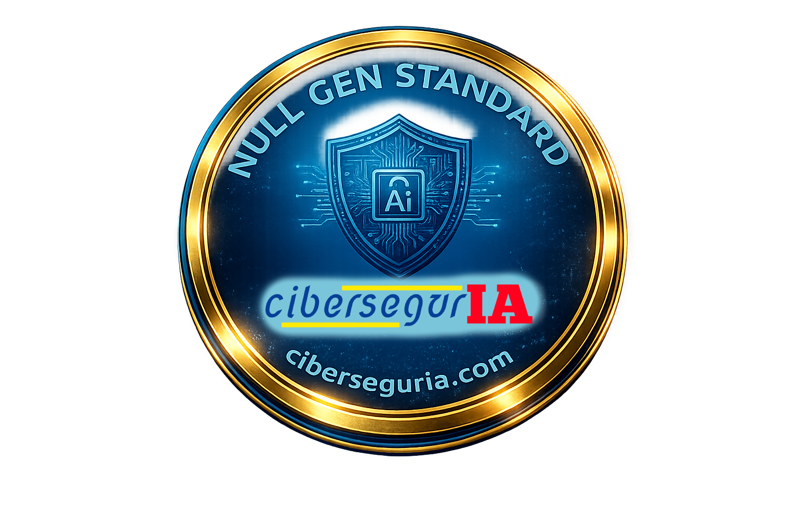
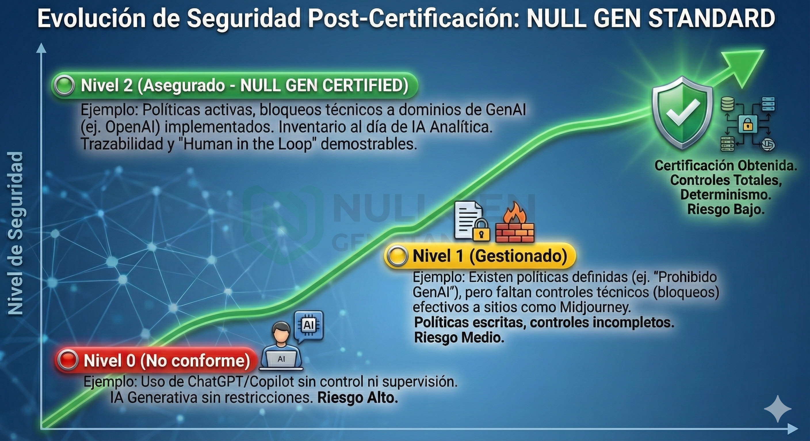

Objetivo del Estándar
Garantizar que los procesos certificados utilizan exclusivamente lógica determinista o IA analítica/discriminativa, excluyendo cualquier componente de IA Generativa (LLMs, Difusión, GANs).

🛡️ Marco de Control
Control 1: Inventario y Clasificación (Asset Management)
Descripción: Inventario actualizado de todo el software y herramientas de procesamiento de datos.
- Requisito: Si se utiliza IA, debe documentarse su naturaleza (ej. Machine Learning Supervisado).
- Exclusión: Prohibido el uso de modelos generativos (GPT, Claude, DALL-E) salvo deshabilitación técnica probada.
- Evidencia: Matriz de software con columna "Tipo de Tecnología".
Control 2: Trazabilidad del Dato y Determinismo (Data Integrity)
Descripción: Trazabilidad clara entre input y output. Capacidad de explicar decisiones ("Linaje del Dato").
- Prueba de Ácido: Ante dos entradas idénticas, el sistema debe producir resultados idénticos (Determinismo). Cero alucinaciones.
- Evidencia: Diagramas de flujo y logs que demuestren transformación lógica sin APIs generativas.
Control 3: Gestión de Terceros y "Shadow AI" (Supply Chain)
Descripción: Control sobre herramientas SaaS y proveedores.
- Bloqueo Técnico: Firewall/DNS filtering para bloquear dominios de GenAI (OpenAI, Midjourney, etc.) desde el entorno certificado.
- Evidencia: Cláusulas contractuales y configuración de firewall/proxy.
Control 4: Política de "Human in the Loop" (Governance)
Descripción: Responsabilidad final sobre el entregable.
- Requisito: Validación final por persona física identificada. Prohibida la entrega automatizada sin supervisión.
- Evidencia: Procedimiento documentado de revisión y aprobación.
📊 Matriz de Madurez

Nivel 0 (No conforme)
Uso de ChatGPT/Copilot sin control ni supervisión.
Nivel 1 (Gestionado)
Existen políticas definidas, pero faltan controles técnicos (bloqueos) efectivos.
Nivel 2 (Asegurado - NULL GEN CERTIFIED)
Políticas activas, bloqueos técnicos implementados, inventario al día y trazabilidad demostrable.
¿Hablamos de tu caso?
Si quieres saber cómo implementar el estándar NULL GEN en tu organización o necesitas una auditoría técnica para certificar tus procesos, estamos aquí para ayudarte.